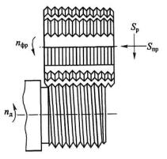

В практике машиностроения применяются следующие основные виды резьбонарезных фрез:
гребенчатые, дисковые и головки для вихревого нарезания резьбы. Применение фрезерования вместо
точения при нарезании наружной и внутренней резьб обеспечивает значительное повышение
производительности за счет:
1) использования многозубого инструмента с большой суммарной активной длиной режущих кромок,
одновременно снимающих стружку (гребенчатые фрезы);
2) увеличения толщины среза на один
зуб (дисковые фрезы);
3) увеличения скорости резания за счет оснащения резцов твердым
сплавом (головки для вихревого нарезания резьбы).
Гребенчатые фрезы применяются для нарезания остроугольных наружных и внутренних резьб с мелким шагом на цилиндрических и конических поверхностях заготовок. По сути, они представляют собой набор дисковых фрез, выполненных за одно целое на одном корпусе с профилем зубьев, соответствующим профилю резьбы. Поэтому канавки между фрезами кольцевые. Для образования зубьев вдоль оси фрезы прорезаны либо прямые, либо винтовые стружечные канавки. Для образования задних углов зубья затылуют по архимедовой спирали.
Схема резьбофрезерования наружной резьбы цилиндрической гребенчатой фрезой представлена на рис. 5. Здесь ось фрезы устанавливается параллельно оси заготовки. Фреза вращается вокруг своей оси со скоростью vф, определяемой стойкостью инструмента, и в начальный момент врезается с радиальной подачей Sp = Szznф, после чего она перемещается на величину одного шага резьбы Р вдоль оси заготовки с подачей Snp= Р. При этом заготовка медленно поворачивается на 1...11/4 оборота. Здесь перебег, равный 1/4 оборота, совершается для компенсации пути врезания инструмента на заданную глубину профиля резьбы.
Недостатком гребенчатых фрез является искажение угла профиля нарезаемой резьбы из-за несовпадения траектории точек режущих кромок фрезы с кривой резьбы, получаемой в сечении, перпендикулярном к оси заготовки. У фрезы это окружность, а у нарезаемой резьбы - архимедова спираль. Однако величина этого искажения мала и достигает 3...4' - для наружной и 7...9' - для внутренней резьб. Обычно она укладывается в пределы допуска на угол профиля крепежной резьбы с мелким шагом.
Дисковые фрезы нашли применение при нарезании резьб больших глубин, диаметров и длины. Например, их часто используют при нарезании резьб червяков, ходовых винтов и т.п. Благодаря тому, что фрезы являются многозубыми инструментами, работают с большими подачами и нарезают резьбу за один проход, их производительность по сравнению с резцами значительно выше.
При нарезании резьбы ось оправки дисковой фрезы устанавливается под углом τ к оси заготовки, равным углу подъема резьбы на ее среднем диаметре (рис. 6). Фреза совершает вращательное движение, а заготовка - вращательное и поступательное движения вдоль своей оси с подачей на один оборот, равный шагу резьбы.
Головки для охватывающего («вихревого»)фрезерования резьбы применяются в тяжелом машиностроении для скоростного нарезания крупных резьб на ходовых винтах длиной до 10 000 мм и диаметром до 1000 мм. Схема головки для охватывающего фрезерования показана на рис. 7. Она имеет достаточно сложную конструкцию и устанавливается на суппорте токарного станка с наклоном к оси заготовки под углом подъема резьбы т. Головка с установленными в ней твердосплавными резцами охватывает заготовку и приводится во вращение от индивидуального привода со скоростью 100...450 м/мин.
Заготовке задается встречное вращение от шпинделя станка с невысокой скоростью. В процессе резания головка перемещается вдоль оси заготовки с подачей на оборот, равной шагу резьбы. Нарезание резьбы обычно производится за один, реже два прохода. В корпусе головки размещаются 2...12 резцов, которые из-за смещения центра ее вращения относительно оси заготовки на величину H вступают в контакт с заготовкой периодически. Поэтому стружка, снимаемая каждым резцом, имеет переменную толщину, равную нулю в точке 1 начала и в точке 2 конца контакта и максимальную толщину в середине между этими точками, равную sz. Такая форма стружки при ее относительно небольшой длине значительно облегчает условия ее удаления из зоны резания. Процесс фрезерования при этом неравномерный, поэтому требуется повышенная жесткость конструкции корпуса головки во избежание появления вибраций.